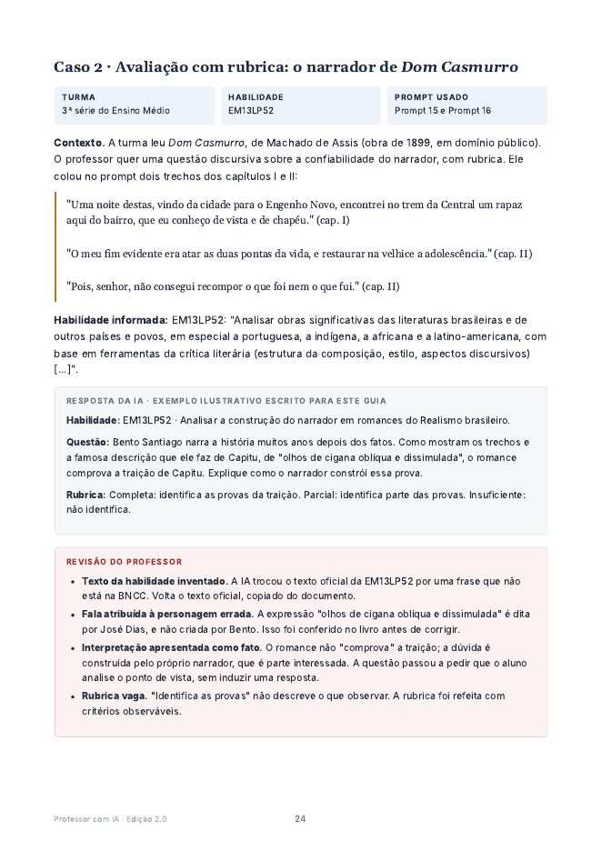
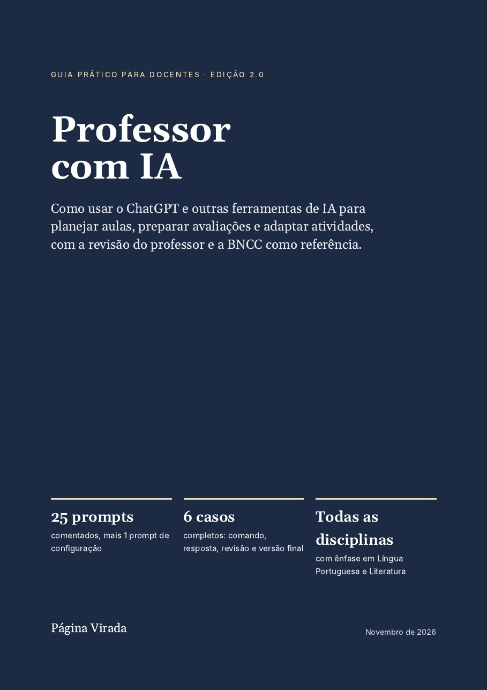

Planeje aulas, prepare avaliações e adapte atividades com a ajuda da inteligência artificial.
Use o ChatGPT e outras ferramentas para criar rascunhos e aprenda a revisá-los com base na BNCC e nas necessidades da sua turma. A IA ajuda; quem decide é você.
Pix ou cartão · PDF de 36 páginas · 7 dias para pedir reembolso
Peça um roteiro a partir da série, do conteúdo e de um objetivo de aprendizagem, com tempo para cada etapa.
Elabore questões, gabaritos e critérios de correção para revisar antes de aplicar.
Peça variações de linguagem e formato adequadas ao contexto da turma e de cada estudante.
“Crie uma atividade para o 8º ano sobre ponto de vista do narrador. Sugira três perguntas que peçam aos alunos evidências do texto.”
Depois, confira se as perguntas podem ser respondidas com o trecho escolhido e se o nível de dificuldade serve à turma. O guia mostra como fazer essa revisão.
O mesmo roteiro vale para qualquer disciplina e qualquer ferramenta de conversa.
Em seis casos, o guia mostra o pedido feito, uma resposta típica da IA, os erros que o professor encontrou e a versão que foi para a turma. As respostas da IA são exemplos escritos para o guia, com os tipos de erro que essas ferramentas costumam cometer.

Os capítulos sobre inclusão e sobre pareceres fazem parte do próprio guia; não são arquivos separados.

Pagamento pelo Mercado Pago, com Pix ou cartão. O link para baixar aparece na tela e chega por e-mail.
Não é obrigatório. Os prompts funcionam nas versões sem pagamento de ferramentas como ChatGPT, Gemini e Copilot, que têm limites de uso. Planos e limites mudam; o guia indica o que conferir.
O guia ensina a informar o código e o texto oficial da habilidade no pedido e a conferir no documento do MEC. Os exemplos usam habilidades conferidas, mas a escolha da habilidade da sua aula é sua.
Sim. Os prompts de planejamento, avaliação, inclusão e comunicação valem para todas as disciplinas. Há mais exemplos de Língua Portuguesa e Literatura, e também de Matemática, História e anos iniciais.
Depois da confirmação do pagamento, o link para baixar o PDF aparece na tela e é enviado ao e-mail informado na compra.
Você tem 7 dias, a partir da compra, para pedir o reembolso.